Todos ellos , según los médicos , sufren porque la jefatura del Estado cediese ante los golpistas y disolviese el gobierno que formaban , que había sido elegido democráticamente en mayo de 1999.
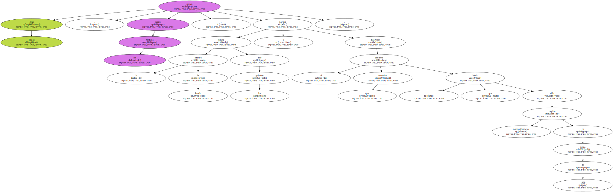El empresario fiyiano George Speight encabeza este " golpe de Estado civil " en favor de la comunidad de nativos fiyianos , como ha definido su acción.
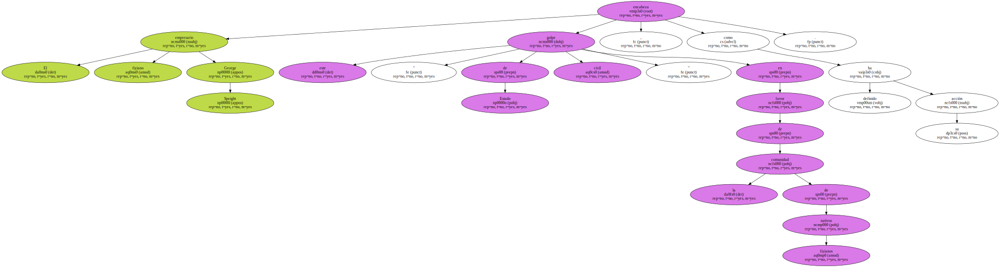Speight aún no ha logrado consolidar su intentona , aunque sí la disolución del gobierno de Chaudhry , y negocia con un régimen militar , impuesto en el país el lunes pasado , una salida a la crisis política que originó el 19 de mayo , cuando entró con seis hombres armados en el Parlamento.
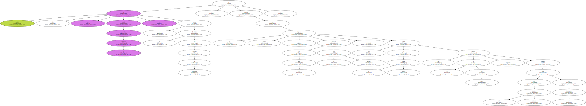El presidente de EEUU , Bill Clinton , y el primer ministro de Israel , Ehud Barak , estudian el desbloqueo de las negociaciones de paz palestino-israelíes , que se han complicado en las últimas semanas según se acercan a los asuntos esenciales.

El presidente de EEUU , Bill Clinton , y el primer ministro de Israel , Ehud Barak , estudian el desbloqueo de las negociaciones de paz palestino-israelíes , que se han complicado en las últimas semanas según se acercan a los asuntos esenciales.
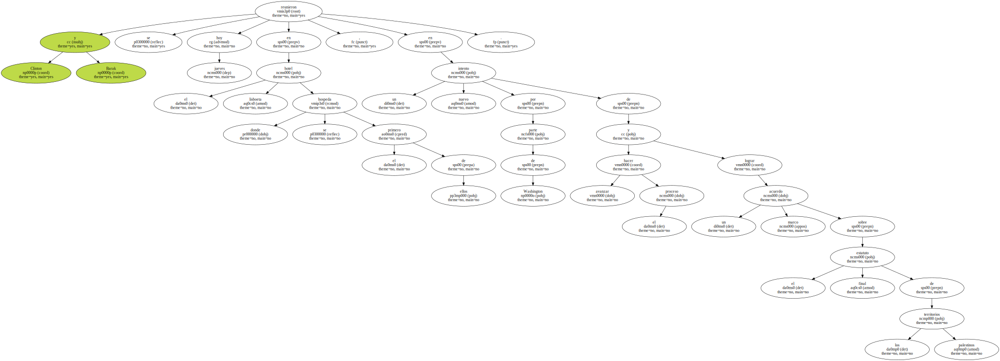Clinton y Barak se reunieron hoy jueves en el hotel lisboeta donde se hospeda el primero de ellos , en un nuevo intento por parte de Washington de hacer avanzar el proceso y lograr un acuerdo marco sobre el estatuto final de los territorios palestinos.
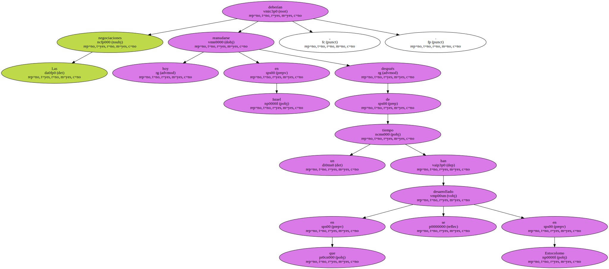Las negociaciones deberían reanudarse hoy en Israel , después de un tiempo en que se han desarrollado en Estocolomo.
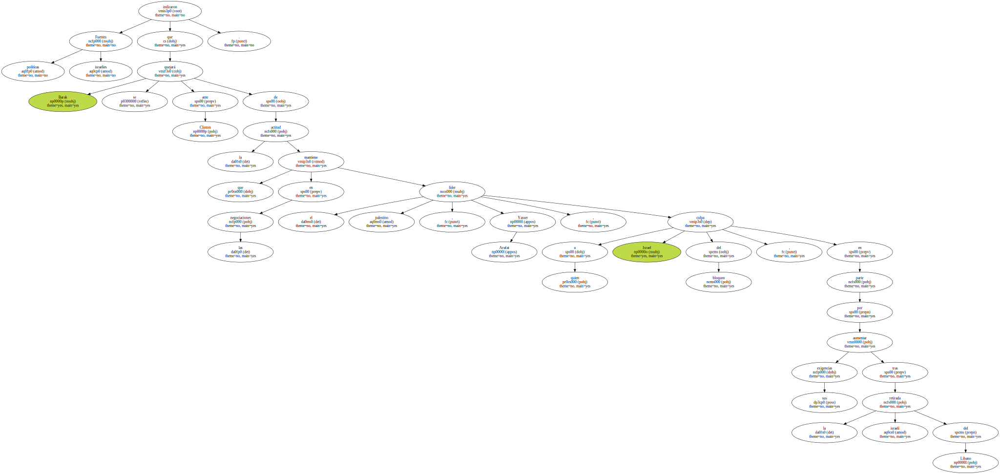Fuentes políticas israelíes indicaron que Barak se quejará ante Clinton de la actitud que mantiene en las negociaciones el líder palestino , Yasser Arafat , a quien Israel culpa del bloqueo , en parte por aumentar sus exigencias tras la retirada israelí del Líbano.
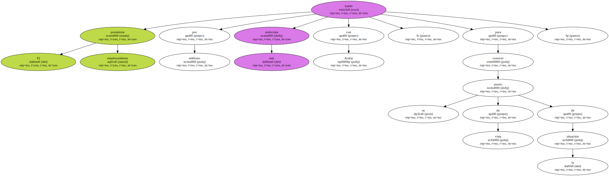El presidente estadounidense habló por teléfono este miércoles con Arafat , para conocer su punto de vista de la situación.
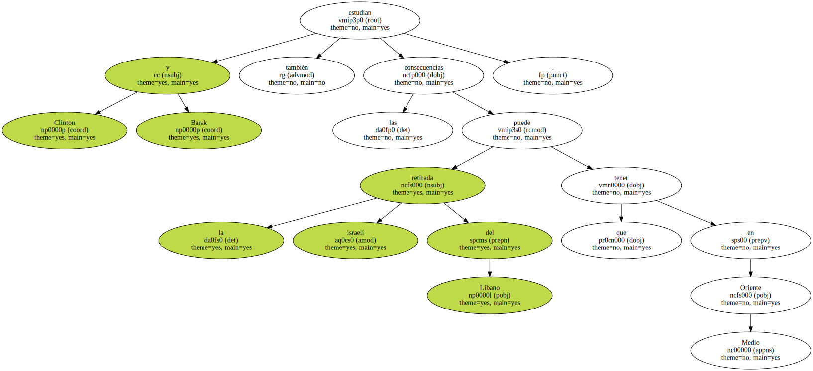Clinton y Barak también estudian las consecuencias que la retirada israelí del Líbano puede tener en Oriente Medio.
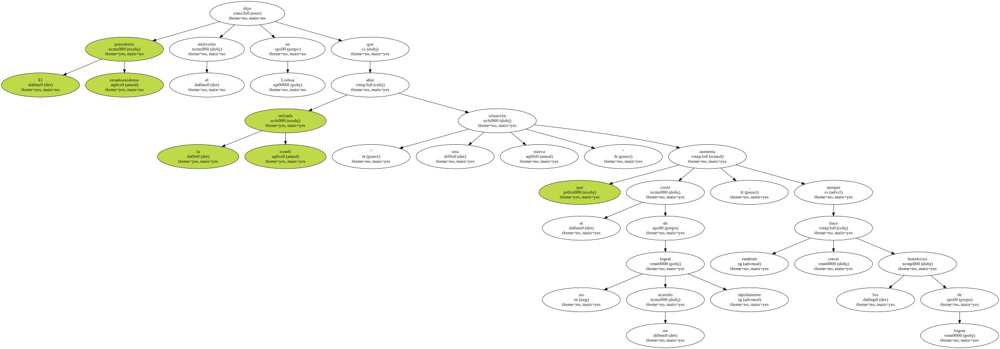El presidente estadounidense dijo el miércoles en Lisboa que la retirada israelí abre " una nueva situación " que aumenta el coste de no lograr un acuerdo rápidamente , aunque también hace crecer los beneficios de.
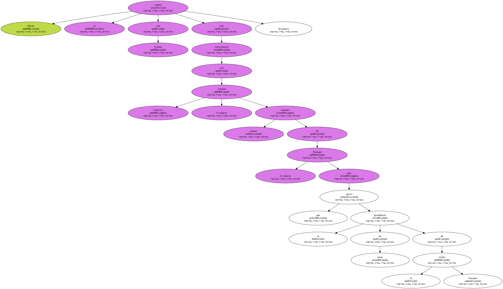El presidente estadounidense dijo el miércoles en Lisboa que la retirada israelí abre " una nueva situación " que aumenta el coste de no lograr un acuerdo rápidamente , aunque también hace crecer los beneficios de.
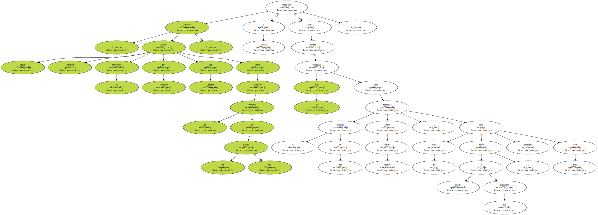Barak se reunió con Clinton tras entrevistarse con Antonio Guterres , primer ministro de Portugal , país que ejerce la presidencia de turno de la Unión Europea.
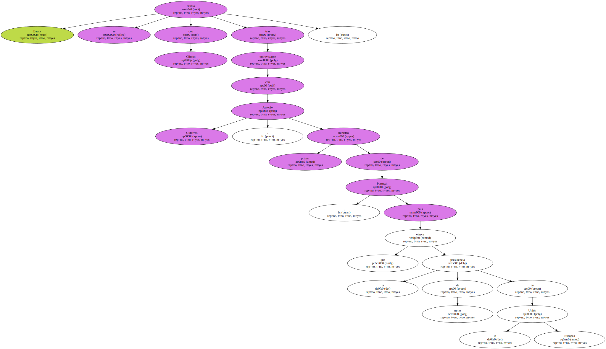Guterres , quien también habló el miércoles por teléfono con Arafat para conocer la versión de las dos partes , manifestó a Barak que la UE quiere cooperar para relanzar el proceso de paz sobre bases fuertes , no sólo entre Israel y los palestinos , sino también con Siria.
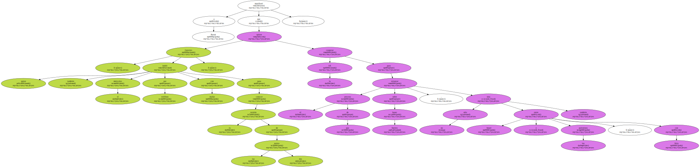